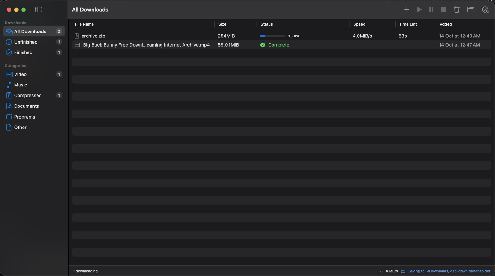
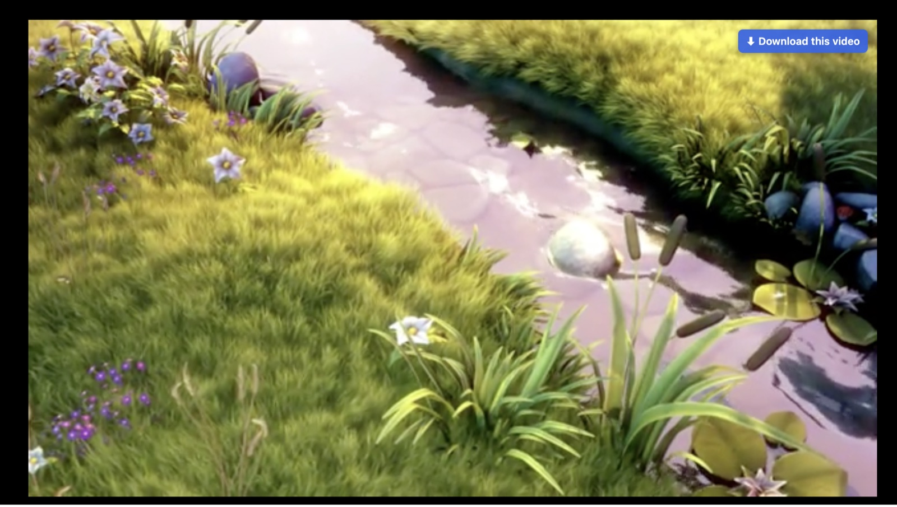
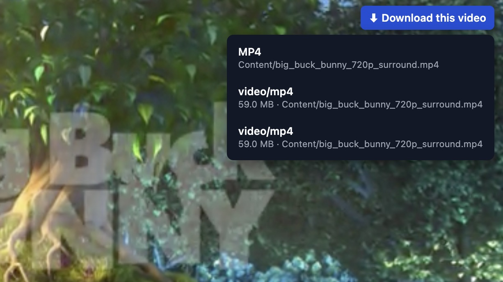

⚡ Multi-connection downloads
Files are split across up to 16 connections. When one finishes early it takes over half of the slowest part, so nothing sits idle.
A free download manager for macOS, inspired by Internet Download Manager on Windows. A Mac app and a browser extension work together: up to 16 connections per file, pause and resume, and a button that saves the video you're watching.
Includes the extension for Chrome, Brave, Edge and Vivaldi · Apple Silicon and Intel · Open source (MIT)

Files are split across up to 16 connections. When one finishes early it takes over half of the slowest part, so nothing sits idle.
A button appears over videos in Chrome, Brave, Edge and Vivaldi. YouTube and most video sites work, including HLS and DASH streams.
Click a download link in your browser and it goes straight to the app instead of the browser's own, slower downloader.
Stop a download and pick it up later, even after a restart. Every finished byte is kept.
Downloads are grouped into Video, Music, Compressed, Documents and Programs. Choose any folder to save into.
Everything runs on your Mac. No account, no tracking, no servers in between. The code is open for anyone to read.
Hover over any playing video and click ⬇ Download this video. If the page has several streams, pick the one you want. The best quality is saved as a single MP4 that plays everywhere.


Download the .zip, which has the app and the browser extension. Open the .dmg inside and drag the app to Applications. Just want the app? Get the .dmg or use Homebrew.
The app isn't notarized by Apple, so macOS asks once. Open the app, click Done, then go to System Settings → Privacy & Security and click Open Anyway. Homebrew installs skip this step.
The setup window downloads the tools the app needs, connects to your browsers and walks you through loading the extension, either from the Browser Extension folder in the zip or from the copy the app keeps. The extension is required: it's what sends your browser's downloads to the app. No Terminal needed.
brew tap ahmedayoub95/mdm https://github.com/ahmedayoub95/MacDownloadManager brew install --cask ahmedayoub95/mdm/mac-download-manager
Yes. It's open source under the MIT license, with no paid version, ads or account.
Yes, to download from your browser. The extension is what catches the files you click and adds the video button. Without it, the browser keeps downloading files itself, and you'd have to copy each link into the app's Add URL window by hand.
Google Chrome, Brave, Microsoft Edge, Vivaldi and Chromium. Safari and Firefox aren't supported yet.
Apple charges developers a yearly fee to notarize apps. This free project isn't notarized, so macOS asks you to confirm once. You can read every line of the code on GitHub.
It can't go beyond your connection's speed, but many servers limit each connection. Using many connections at once gets around that, often several times faster than a browser download.